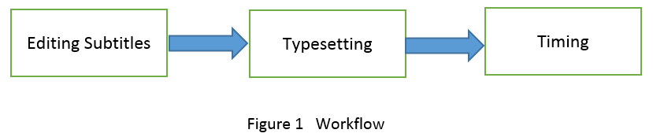

About Aegisub
Aegisub is a software program for adding subtitles to videos. It supports subtitle formats such as:
- Advansed Substation Alpha v4+ (.ass)
- Substation Alpha v4 (.ssa)
- SubRip Text (.srt)
- MPEG4 Timed Text (.ttxt)
- MicroDVD (.sub)
- Plain "dialog script" formatted text (.txt)
The subtitles that are created in Aegisub can be saved in a .ass file. When you play the video, the media playing software combines the .ass file with the video file. Therefore, the subtitles can be displayed matching the corresponding audio. The workflow of adding subtitles to a video can be divided into three parts:
The workflow of adding subtitles to a video can be divided into three parts:
- Editing subtitles
- Typesetting
- Timing

You can create subtitles by opening an empty subtitle file. Then you type scripts in separate lines in the subtitle file. You can also load your scripts into a subtitle file from other word editing files. In the subtitle grid (multi-line subtitles display area), each line of subtitles is displayed with its line number, start time, end time, and CPS (characters per second). A red CPS in a line tells you that too many characters are displayed in a second, so the audience may not have enough time to read the subtitles while watching the video. When you see the red CPS in a subtitle line, you should consider making the line shorter.
Typesetting is to design the font size, font family, shadow, angle, and background of subtitles.
Typesetting is very important because it affects the readability of subtitles. For example, if the color of subtitles is too close to the background color, the audience can not see the subtitles clearly. Then subtitles lose the purpose; therefore, you need to design the typesetting to enhance the readability of subtitles.
Good typesetting not only helps audience understand the scripts but also adds aesthetic visual effects to a video.
Aegisub has plenty of attributes for you to attain desired visual effects for subtitles.
Timing is important because it lets audience see the subtitles at the right time point. Subtitles need to be displayed matching the actor’s speech. Each line of subtitles should be displayed between the correct start and end time points.
To match the subtitles to the audio, you first play the audio in the audio area to locate the start and end points of a sentence. Then you associate the start and end points to a corresponding subtitle line. After you have assigned the start and end time points to a subtitle line, you need to double check the CPS to ensure that it is not red.